收录于合集
#数据可视化 15 个
#实用技术 19 个
“ 盼望着，盼望着，寒假来了，春节的脚步近了。我的心里有两件事情，一件是推送，另一件也是推送。”
——失踪多时的方法论小编
在往期的推送中，我们简要介绍了政治学实验的原理和操作，本期我们将聚焦从实验到论文的“最后一公里”——数据可视化。毫无疑问，实验方法要求在最大程度上剥离混杂因素的干扰，因此其研究设计往往是复杂繁琐的。而如果混杂因素得到了充分控制，那么实验结果的最终呈现应当是一目了然、简单易懂的。一般而言，理想的实验结果无非是控制组和实验组存在显著差异或处理前（前测）与处理后（后测）存在显著差异。因此，实验数据可视化的目的就是直观地反映这两种“比大小”的结果。
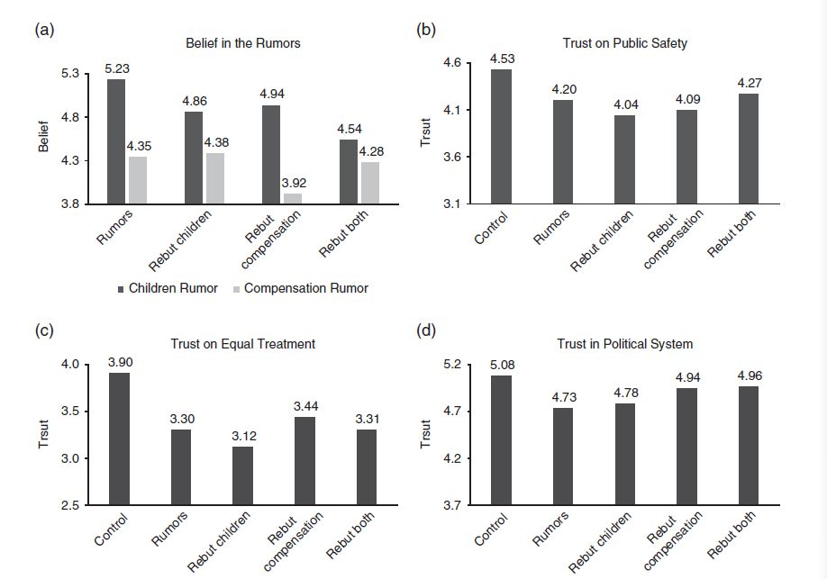
一种较为简单的方法就是直接将分组后的均值映射到条形图上。上图源于Haifeng Huang（2015）对于谣言的分组研究。然而，条形图只反映了平均值这一个指标，没有展现各组数据的分布情况或样本对总体的代表性情况。事实上，读者对于各组数据之间究竟有没有显著差异的直观感受非常依赖于人为设定的坐标轴。因此，很多科学家和数据工作者建议，应当在展现聚合数据（如平均值）的图示中添加误差线（如若干个标准误），效果如下图所示。显然，这种图示对于初学者而言是有难度的。因此，在这篇推送中，我们分别为Excel、Stata和R用户准备了 保姆级 的数据结果可视化教程。
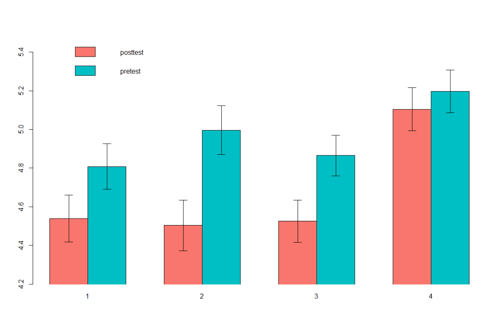
一、Excel经典条形图与自定义误差线
首先，我们准备（编造）一个最简单的实验数据集。如下表所示，我们一个有6个观测单位，均匀分成“控制组”和“处理组”，每个观测单位都有前测和后测两个数据结果。
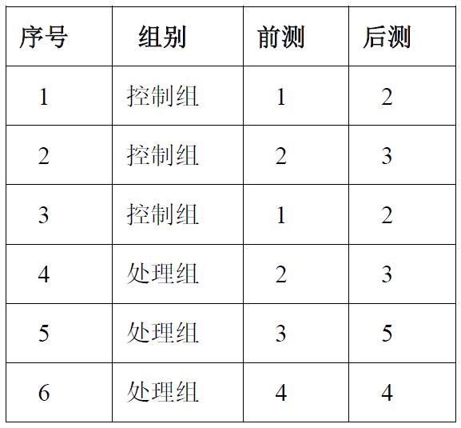
Excel对于非聚合数据的处理能力有限，因此我们首先将该数据计算并转化为聚合数据，如下表所示。
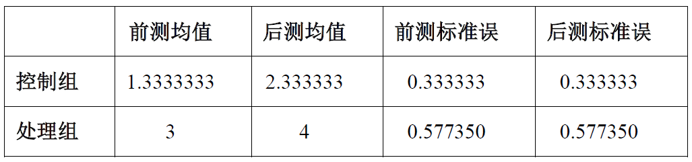
首先，我们用鼠标选中该表的前三列，然后点击窗口顶端菜单栏中的“插入”—“插入柱形图或条形图”—“簇状柱形图”，得到我们熟悉的经典条形图。然后选中该图表后点击窗口顶端菜单栏“图表工具”—“设计”，点击最左边“添加图表元素”，在下拉菜单中选择“误差线”—“其他误差线选项”。随后，在右侧“设置误差线格式”趋于找到“误差量”，选择“自定义”。将提前计算好的标准误填入“正错误值”和“负错误值”就可以生成预期的误差线了。最后，将控制组和处理组的误差线全部标上，经过修饰后，我们便得到了最终的图示（聚合数据的行列分布决定了条形图的排列方式，读者朋友可以自行尝试一下）。
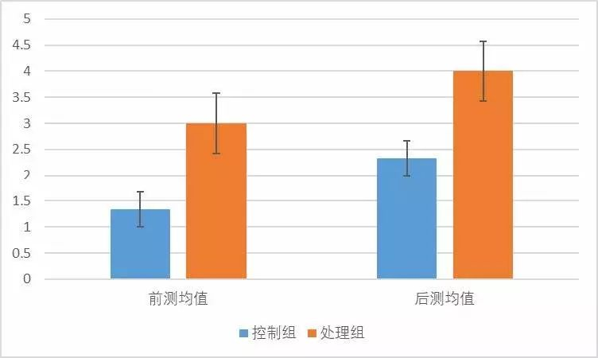
二、 Stata中coefplot的妙用
在Stata中，我们可以通过“tw rcap”绘图命令和条形图的结合来实现上文中Excel对聚合数据的绘图操作。已有资源对此进行详细地介绍，我们不再赘述。（见：http://blog.sina.com.cn/s/blog_8f6ff2310102w4k0.html）事实上，我们可以直接用coefplot包来对原始数据进行可视化。coefplot包是政文观止Poliview的老朋友了，它致力于对模型系数及其置信区间进行可视化，其强大的功能甚至可以取代传统的回归表格（往期链接：这两个功能让你的Stata风骚十倍）。但coefplot的功能远不止回归分析可视化这么简单。
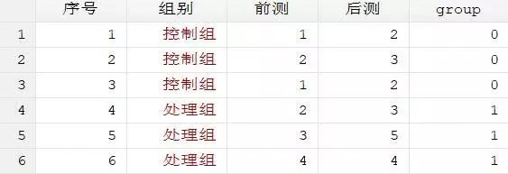
首先我们用Stata读入原始数据，并生成代表组别的虚拟变量（控制组 = 0， 处理组 = 1）。随后我们通过以下代码计算一下各组的均值并将结果储存起来。最后，我们输入一行简单的代码：“coefplot 前测 后测, vertical”，就可以得到两组在前测和后测中的得分及其95%置信区间（可近似理解为1.96个标准误）。
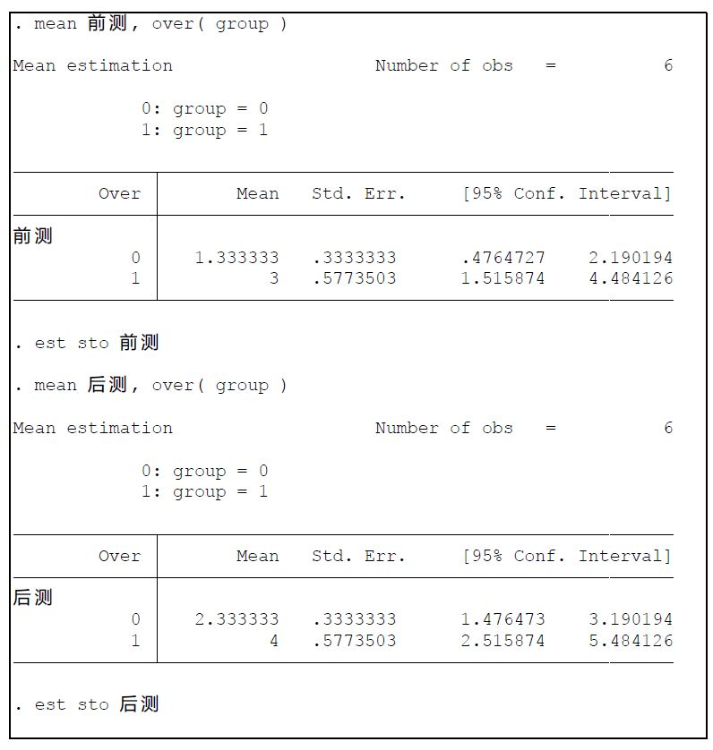
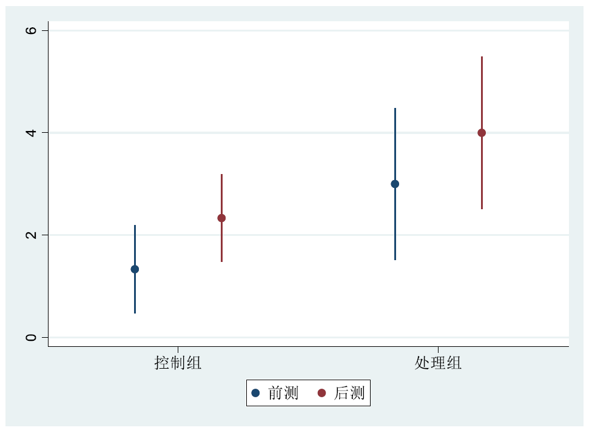
三、R语言数据转换与sciplot
专门为统计和可视化而生的R语言在这一问题的处理上则更为便捷和智能。首先我们同样读入原始数据。随后，我们载入需要的“sciplot”和“tidyr”这两个包。第一步，我们将数据由宽格式转变为长格式，即把“前测”和“后测”这两个数值型变量变成一个因子型变量和一个数值型变量，同时保留组别分类，结果如下图所示。随后我们将gather的结果储存为新的数据框（本文重新赋值给了test）。
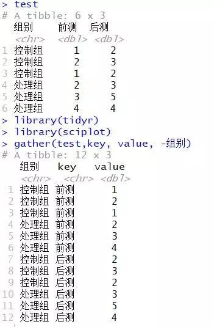
第二步，我们输入代码“bargraph.CI(data = test, 组别, value, group = key)”，可以发现R已经画出了基本符合要求的图示。我们继续对该语句进行修饰，最终输入“bargraph.CI(data = test, 组别, value, group = key,legend = T,ylim = c(0,5),col = c("#F8766D","#00BFC4") )”，就可以大功告成了。遗憾的是，前测和后测的排列顺序似乎有点不科学，小编猜测这是拼音字母顺序造成的。我们可以将“前测”赋值为“1.前测”，后测赋值为“2.后测”，这一问题就迎刃而解了。
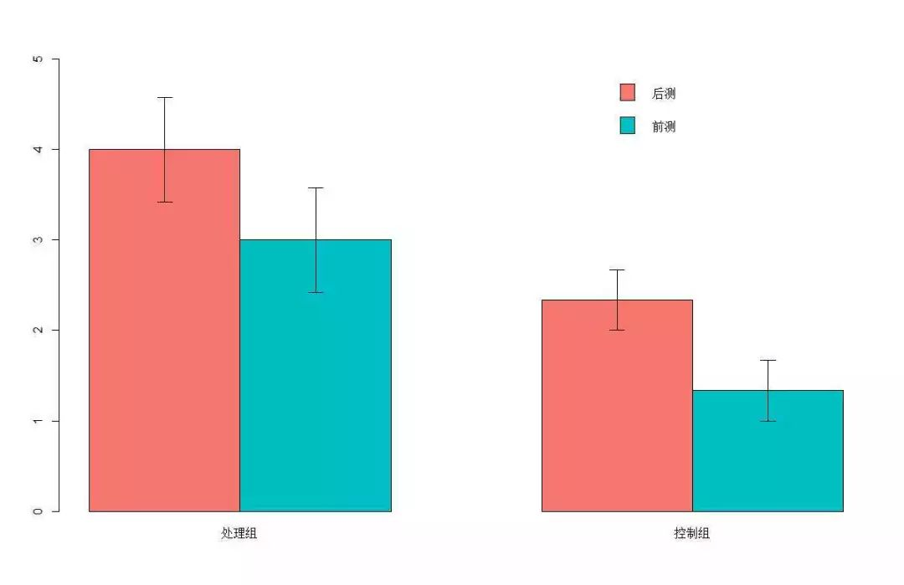
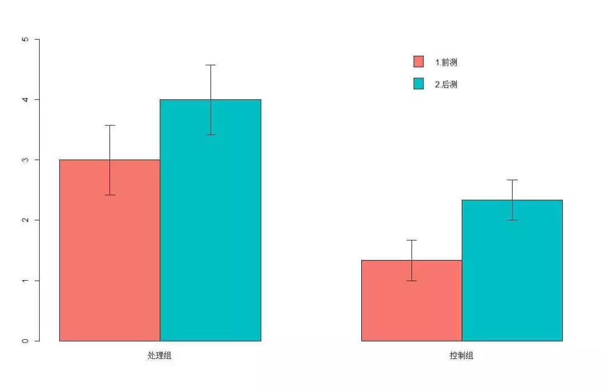
撰文：陆屹洲
编辑：吴温泉 审读：杨端程
感谢您支持学术公益
您的赞赏是我们追求卓越的动力！

政文观止
微信扫一扫赞赏作者 __赞赏
已喜欢，对作者说句悄悄话
取消 __
发送给作者
发送
最多40字，当前共字
上一页 1/3 下一页
长按二维码向我转账
受苹果公司新规定影响，微信 iOS 版的赞赏功能被关闭，可通过二维码转账支持公众号。